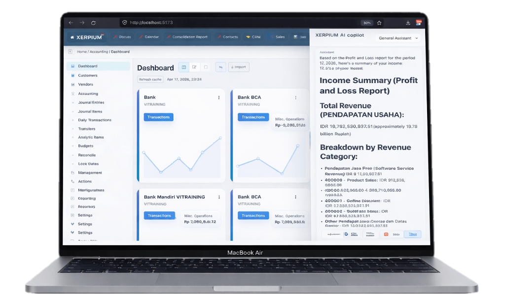

Full ERP. AI-Native. Super Fast.
Enterprise ERP. Full AI. Zero wait.
Xerpium is a modern full ERP with enterprise-grade coverage, paired with a flexible app development framework for custom workflows, fields, reports, and evolving business operations.
Built for companies that need depth, speed, and flexibility.
A strong fit for teams that want full ERP coverage, AI assistants, faster workflows without long loading times, and onboarding that is ready to move.
Xerpium runtime
Ready
Enterprise-grade ERP that feels light in daily use.
From accounting, sales, purchasing, inventory, manufacturing, HR, payroll, CRM, and projects to custom apps, Xerpium is built for businesses that need deep ERP capabilities with a faster, more practical user experience.
Report generation
Instant-feel
Development assistant
Add fields, adjust workflows, build reports
Deployment model
Full SaaS, ready to use
Video
See Xerpium in action.
Watch Xerpium tutorial videos and feature demos to understand the workflows inside the system.
AI Showcase
See Xerpium AI assistance working directly inside the operating flow. Beyond the reporting visual already featured in the hero, this view shows how the AI assistant sits inside the dashboard and helps turn business data into practical insight.
Parity
Full enterprise ERP product
The capabilities expected from a modular enterprise ERP are already present in Xerpium, so teams do not need to trade down for speed.
Framework
Modular app development framework
Well suited for partners, developers, and internal teams building business modules, integrations, and automation around their operations.
Experience
Designed for fast-moving operations
Users stay focused on transactions and insight instead of waiting through heavy loading for every report or major process.
Industries
Ready-to-use ERP for many businesses.
Xerpium delivers 10 base applications and 34 vertical market solutions ready to use out of the box.
Base Applications
Vertical Markets (34 industries)
Advantage
The advantages that make Xerpium feel different.
This is not only about feature parity. Xerpium adds a visible layer of speed, AI, and onboarding simplicity from day one.
AI assistants for analysis and operational automation
Generate analytical reports, help read business data, and drive recurring operational automation directly inside the ERP.
AI assistants for development work
Add fields, change workflows, build reports, and shorten iteration cycles without rebuilding everything from scratch.
High-speed processing
Optimized for report generation, payroll runs, confirmation flows, and large operational processes with a much more responsive feel.
Full offline mode on desktop and mobile
Operations remain more flexible when connectivity is not ideal, across both desktop and mobile usage.
Full SaaS, no local installation overhead
No user-side server setup required. Teams can sign in and work directly on an environment that is already ready to use.
Ready from onboarding
Choose the business type, then Xerpium helps configure the COA, relevant apps, AI assistants, reporting structure, and the right system baseline.
Onboarding
Pick the business type. Xerpium prepares the foundation.
The implementation flow is kept light so users do not start from a blank screen. Once the baseline is ready, they can import data and begin transactions right away.
Select the business type
Retail, manufacturing, services, distribution, or another model that best matches the operating reality.
The system baseline is prepared automatically
COA, relevant apps, AI assistants, and reporting structure are shaped to match the business profile that was chosen.
Import data and start transacting
Once the core setup is ready, teams can continue with initial data migration, short training, and operational go-live.
Why Xerpium
ERP should be powerful without feeling heavy.
Xerpium is built for companies that need feature depth, development flexibility, and real performance in day-to-day operations. The result is an ERP that stays deep while becoming easier to work with.
Testimonials
What users notice when the system becomes faster.
When reports, heavy processes, and daily work become more responsive, the impact is felt immediately by users, supervisors, and management.
“Detailed reports used to interrupt the working rhythm. In Xerpium, the finance team can keep analyzing instead of waiting through long loading times.”
Finance Manager Distribution company“The biggest difference is how much lighter the daily flow feels. Confirmation steps, payroll, and reporting all feel much more comfortable to run.”
Operations Lead Multi-unit business group“The AI assistant and initial onboarding helped our team go live faster. The system stays practical even when the business setup is complex.”
Project Sponsor Enterprise ERP transformationFree Trial
Try Xerpium now.
See how an enterprise-grade ERP can feel faster, smarter, and more deployment-ready from the very beginning.
Open Free Trial